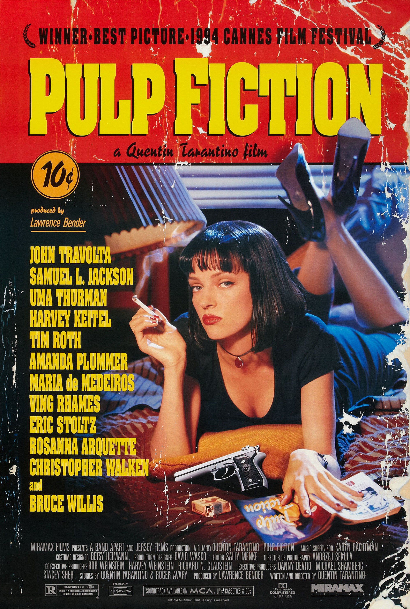
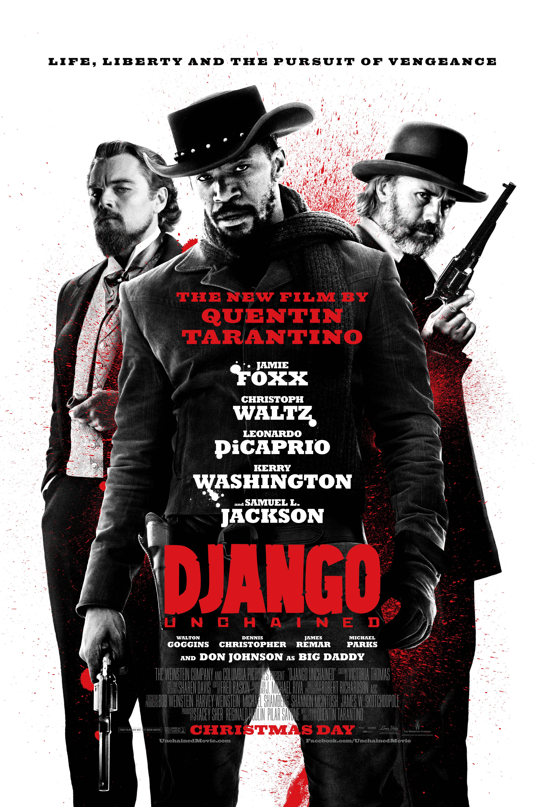
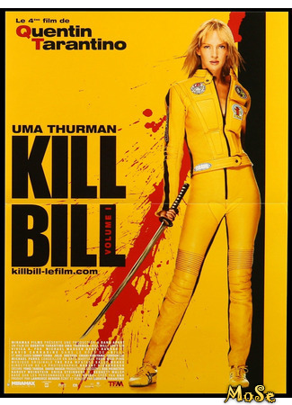
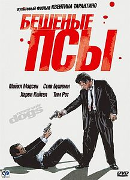

|

Криминальное чтивоДвое бандитов Винсент Вега и Джулс Винфилд ведут философские беседы в перерывах между разборками и решением проблем с должниками криминального босса Марселласа Уоллеса.В первой истории Винсент проводит незабываемый вечер с женой Марселласа Мией. Во второй рассказывается о боксёре Бутче Кулидже, купленном Уоллесом, чтобы сдать бой. В третьей истории Винсент и Джулс по нелепой случайности попадают в неприятности. |

Джанго освобожденныйЭксцентричный охотник за головами, также известный как Дантист, промышляет отстрелом самых опасных преступников. Работенка пыльная, и без надежного помощника ему не обойтись. Но как найти такого и желательно не очень дорогого? Освобождённый им раб по имени Джанго – прекрасная кандидатура. Правда, у нового помощника свои мотивы – кое с чем надо сперва разобраться. |
|

Убить Билла: Кровавое дело целикомВ беременную наемную убийцу по кличке Черная Мамба во время бракосочетания стреляет человек по имени Билл. Пуля в голове жертвы, кровь на подвенечном платье, темнота… Но голова у Черной Мамбы оказалась крепкой. |

Бешеные псыЭто должно было стать идеальным преступлением. Задумав ограбить ювелирный магазин, криминальный босс Джо Кэбот собрал вместе шестерых опытных и совершенно незнакомых друг с другом преступников. Но с самого начала все пошло не так, и обычный грабеж превратился в кровавую бойню. |